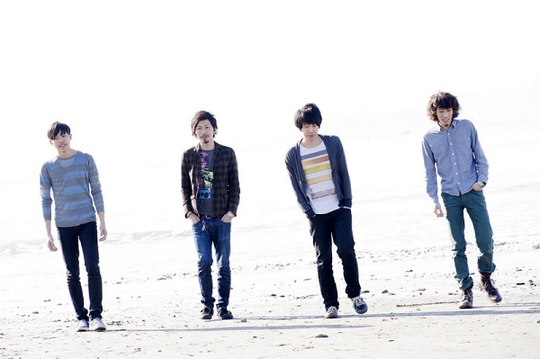

She Her Her Hers
She Her Her Hers

Member
タカハシヒロヤス(Vo)
Follow @hiroyasudesu
とまそん(Ba)
Follow @tomasong
坂本夏樹(Gt)
Follow @sakamotonatsuki
ツイートする
Profile
2011年8月、タカハシヒロヤス（ex PLINGMIN）、とまそん（ex オトナモード）、坂本夏樹（チリヌルヲワカ）により結成。
ロック、ポップス、UK・USインディー、シューゲイザー等の音楽性を詰め込みながらも、シンプルでキャッチーなバンドサウンド。
2012年 3月20日 1st mini Album「scene」をリリースし、東名阪のライブツアーを行う。
Comment
今最も熱いイベントだと噂は方々から聞いています。
楽しみにしています。
YouTube
［ monologue ］
Link
Official Web Site
楽しみにしています。